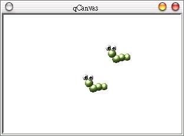

QCanvasSprite
可以根據一組給定的圖片進行連續的圖片播放，這組圖片是設定在QCanvasPixmapArray類別中，QCanvasPixmapArray中的圖
片都是以索引來管理，我們可以使用setImage()方法來讀入圖片，我們使用setSequence()指定這組
QCanvasPixmapArray圖片給QCanvasSprite物件。
下面這個程式很簡單，示範如何使用QCanvasSprite進行動畫播放，畫面會有兩隻小毛蟲進行賽跑，不斷的一伸一縮並向右移動：
#include <qapplication.h>
#include <qcanvas.h>
#include <qimage.h>
class Caterpillar : public QCanvasSprite {
public:
Caterpillar(QCanvas *canvas) : QCanvasSprite(0, canvas) {
static QCanvasPixmapArray ani;
// 讀入一組圖片
ani.setImage(0, new QCanvasPixmap("cater1.jpg"));
ani.setImage(1, new QCanvasPixmap("cater2.jpg"));
// setup圖片組
setSequence(&ani);
// 循環播放
setFrameAnimation(QCanvasSprite::Cycle);
}
};
class View : public QCanvasView {
public:
View(QCanvas& canvas) : QCanvasView(&canvas){
canvas.resize(300, 200);
setFixedSize(sizeHint());
Caterpillar *cater1 = new Caterpillar(&canvas);
cater1->move(250, 50);
cater1->setVelocity(-1, 0);
cater1->setZ(10);
cater1->show();
Caterpillar *cater2 = new Caterpillar(&canvas);
cater2->move(250, 100);
cater2->setVelocity(-1.5, 0);
cater2->setZ(10);
cater2->show();
}
};
int main(int argc, char** argv) {
QApplication app(argc, argv);
QCanvas canvas(0, 0);
canvas.setAdvancePeriod(500); // 移動更新間隔:
canvas.setDoubleBuffering(true); // double buffer
View c(canvas);
app.setMainWidget(&c);
c.show();
return app.exec();
}
下圖為執行的結果：

|
|